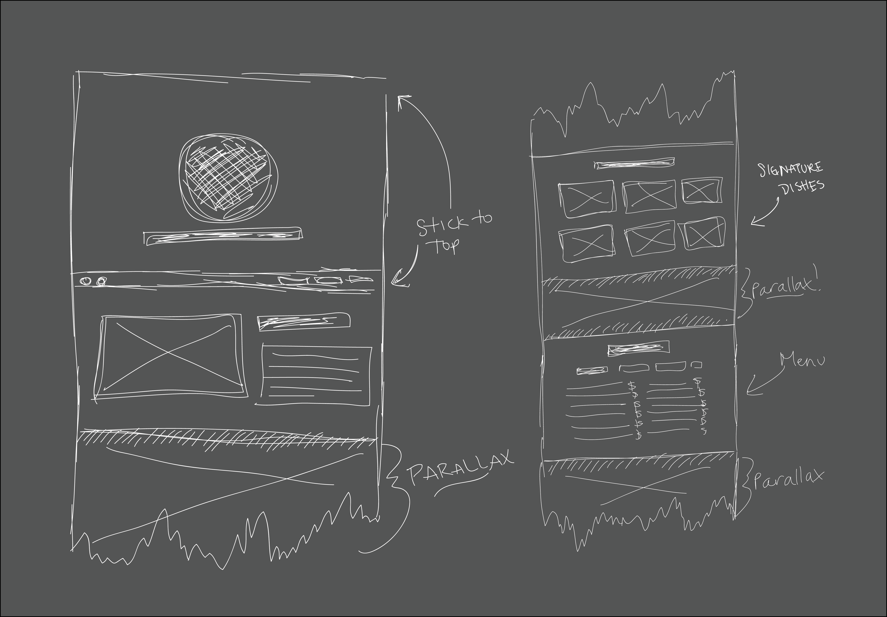

Tenji Modern Sushi is a fictional sushi resturant located in New York City. My goals with this site was to depict a very modern upscale sushi resturant that serves only the best sushi. With the single page web design, this site is easily accessed via mobile devices as you don't have to wait for more pages to load.
I start all of my web design with wireframes to decide how I want my site to look and how it will work before I even open a text editor. I think this step is very important, otherwise you end up moving things around for hours without making any progress.
This is a completely fictional website. I designed and coded a resturant website for a portfolio piece. Sushi was a fun restaurant to design for becuase the images are always so vibrant.
Live Demo
The Code